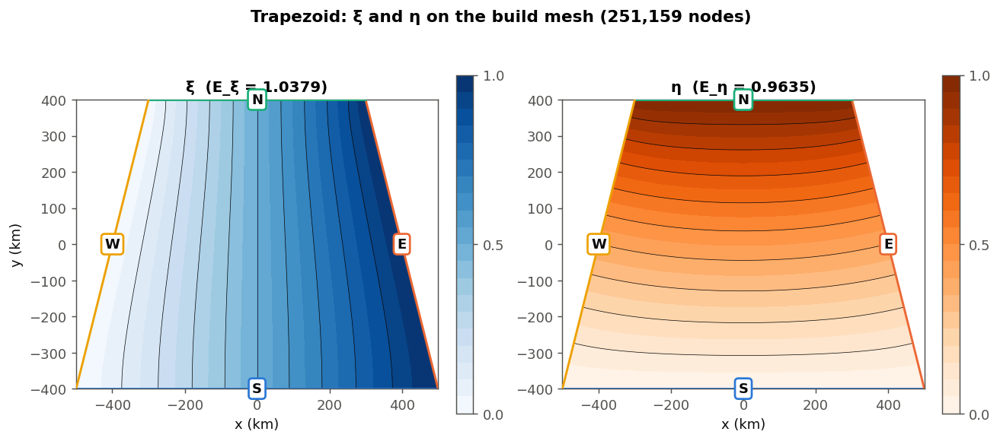
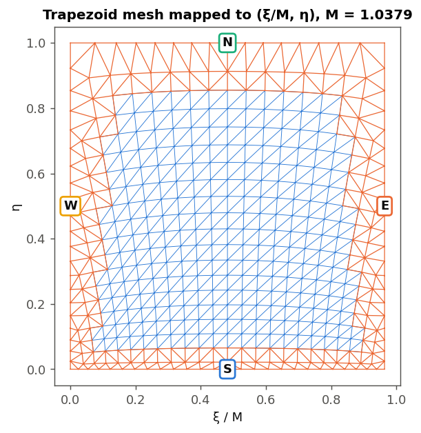

<title>Conformal Grids Primer</title>
<meta name="claude:viewport-fit-sides" content="cover">
<link rel="preconnect" href="https://fonts.googleapis.com">
<link rel="preconnect" href="https://fonts.gstatic.com" crossorigin>
<link rel="stylesheet" href="https://fonts.googleapis.com/css2?family=Newsreader:ital,opsz,wght@0,6..72,400;0,6..72,600;1,6..72,400&family=Source+Sans+3:ital,wght@0,400;0,600;1,400&family=JetBrains+Mono:wght@400;500&display=swap">
<style>
/* Layout: one reading column of numbered steps; live diffusion demos break out to the full
   column width. Same family as the PR #151 study guide, tuned for a first read. */
:root {
  --paper: #F4F7F7;
  --raised: #FFFFFF;
  --ink: #13222B;
  --muted: #53656E;
  --rule: #D2DCDE;
  --wash: #E6EEEF;
  --code: #E9F0F1;
  --accent: #15637C;
  --accent-wash: #D5E8EE;
  --cold: #2C6A99;
  --mid: #F7F5EF;
  --warm: #BF5229;
  --line-a: #0E5C74;
  --line-b: #A34A14;
  --flag: #A2421C;
  --flag-wash: #F5E1D8;
  --display: "Newsreader", "Iowan Old Style", Georgia, serif;
  --body: "Source Sans 3", "Segoe UI", system-ui, sans-serif;
  --mono: "JetBrains Mono", ui-monospace, "SFMono-Regular", Menlo, monospace;
}
@media (prefers-color-scheme: dark) {
  :root:not([data-theme="light"]) {
    --paper: #0D151A; --raised: #13202A; --ink: #DCE7EA; --muted: #8EA1A9; --rule: #24363F;
    --wash: #162530; --code: #15232C; --accent: #74BBD3; --accent-wash: #173543;
    --cold: #4E94C6; --mid: #1B2830; --warm: #E07A4E; --line-a: #7FC6DE; --line-b: #EBA572;
    --flag: #E78D66; --flag-wash: #3A241B; color-scheme: dark;
  }
}
:root[data-theme="dark"] {
  --paper: #0D151A; --raised: #13202A; --ink: #DCE7EA; --muted: #8EA1A9; --rule: #24363F;
  --wash: #162530; --code: #15232C; --accent: #74BBD3; --accent-wash: #173543;
  --cold: #4E94C6; --mid: #1B2830; --warm: #E07A4E; --line-a: #7FC6DE; --line-b: #EBA572;
  --flag: #E78D66; --flag-wash: #3A241B; color-scheme: dark;
}

* { box-sizing: border-box; }
html { -webkit-text-size-adjust: 100%; }
body { background: var(--paper); color: var(--ink); font-family: var(--body); font-size: 18px; line-height: 1.65; }
a { color: var(--accent); text-decoration-thickness: 1px; text-underline-offset: 2px; }
a:hover { text-decoration-thickness: 2px; }
a:focus-visible, button:focus-visible, summary:focus-visible { outline: 2px solid var(--accent); outline-offset: 2px; border-radius: 3px; }

.page {
  max-width: 47rem; margin: 0 auto;
  padding-left: max(16px, env(safe-area-inset-left, 0px));
  padding-right: max(16px, env(safe-area-inset-right, 0px));
  padding-block: 48px 96px;
}
h1, h2, h3 { text-wrap: balance; }
h1 { font-family: var(--display); font-weight: 600; font-size: clamp(2.1rem, 1.5rem + 2.6vw, 3rem); line-height: 1.08; letter-spacing: -0.015em; margin: 0.25em 0 0.45em; }
h2 { font-family: var(--display); font-weight: 600; font-size: 1.7rem; line-height: 1.2; margin: 0 0 0.5em; }
h3 { font-size: 1.08rem; font-weight: 600; margin: 1.6em 0 0.3em; }
p, ul, ol { margin: 0 0 1em; }
li { margin: 0.3em 0; }
strong { font-weight: 600; }
code { font-family: var(--mono); font-size: 0.82em; background: var(--code); padding: 0.06em 0.32em; border-radius: 4px; }
.eyebrow { margin: 0; font-family: var(--mono); font-size: 0.74rem; letter-spacing: 0.08em; text-transform: uppercase; color: var(--muted); }
.lede { font-family: var(--display); font-size: 1.32rem; line-height: 1.5; }
.promise { border-top: 1px solid var(--rule); border-bottom: 1px solid var(--rule); padding-block: 14px; margin: 1.6em 0 0; color: var(--muted); font-size: 0.98rem; }
.promise strong { color: var(--ink); }

.step { margin-top: 72px; }
.step-head { display: grid; grid-template-columns: 3.2rem minmax(0, 1fr); align-items: baseline; }
.step-num { font-family: var(--mono); font-size: 0.9rem; color: var(--accent); }
.step-body { margin-left: 3.2rem; min-width: 0; }
.take {
  margin: 1.4em 0 0; padding: 12px 16px; background: var(--accent-wash); border-radius: 6px;
  font-size: 0.98rem;
}
.take b { font-family: var(--mono); font-weight: 500; font-size: 0.72rem; letter-spacing: 0.08em; text-transform: uppercase; color: var(--accent); display: block; margin-bottom: 2px; }
.math { font-family: var(--display); font-style: italic; white-space: nowrap; }
.formula { font-family: var(--display); font-size: 1.15rem; text-align: center; margin: 0.4em 0 1em; }
details.check { margin: 1.2em 0 0; border-top: 1px solid var(--rule); padding-top: 10px; }
details.check summary { cursor: pointer; font-weight: 600; color: var(--accent); font-size: 0.98rem; }
details.check p { margin: 0.6em 0 0; }

/* figures and demos */
figure { margin: 1.4em 0 1.2em; }
figcaption { color: var(--muted); font-size: 0.9rem; line-height: 1.5; margin-top: 8px; }
.minis { display: grid; grid-template-columns: repeat(3, minmax(0, 1fr)); gap: 16px; }
.minis canvas { display: block; width: 100%; height: 150px; }
.minis b { display: block; font-size: 0.92rem; margin-top: 4px; }
.minis span { display: block; color: var(--muted); font-size: 0.84rem; line-height: 1.4; }
figure img { display: block; max-width: 100%; height: auto; background: #FFFFFF; border: 1px solid var(--rule); border-radius: 4px; padding: 8px; }
svg.diagram { display: block; width: 100%; max-width: 32rem; height: auto; margin: 0 auto; }
svg.diagram text { font-family: var(--body); fill: var(--ink); }

.lab { margin: 1.6em 0 0.6em; border-top: 1px solid var(--ink); padding-top: 12px; }
.lab-bar { display: flex; flex-wrap: wrap; gap: 8px 16px; align-items: center; justify-content: space-between; margin-bottom: 10px; }
.lab-title { font-family: var(--mono); font-size: 0.74rem; letter-spacing: 0.08em; text-transform: uppercase; color: var(--muted); }
.seg { display: flex; flex-wrap: wrap; gap: 6px; }
.seg button, .act {
  font: 600 0.84rem var(--body); color: var(--ink); background: var(--raised);
  border: 1px solid var(--rule); border-radius: 999px; padding: 5px 12px; cursor: pointer;
}
.seg button[aria-pressed="true"] { background: var(--ink); color: var(--paper); border-color: var(--ink); }
.act { background: var(--accent); color: var(--paper); border-color: var(--accent); }
.act:disabled { opacity: 0.6; cursor: default; }
.stage { position: relative; }
.stage canvas { display: block; width: 100%; }
.readout { font-family: var(--mono); font-size: 0.78rem; color: var(--muted); margin-top: 8px; line-height: 1.6; font-variant-numeric: tabular-nums; }
.legend { display: flex; flex-wrap: wrap; gap: 4px 16px; font-size: 0.86rem; color: var(--muted); margin-top: 6px; }
.legend i { display: inline-block; width: 18px; height: 3px; vertical-align: middle; margin-right: 6px; border-radius: 2px; }
.shape-note { margin-top: 10px; font-size: 0.98rem; }

.tw { overflow-x: auto; margin: 0.4em 0 1.2em; border-top: 1px solid var(--ink); border-bottom: 1px solid var(--rule); }
table { border-collapse: collapse; width: 100%; font-size: 0.94rem; line-height: 1.45; font-variant-numeric: tabular-nums; }
th { text-align: left; font-weight: 600; padding: 8px 10px; border-bottom: 1px solid var(--rule); vertical-align: bottom; }
td { padding: 8px 10px; border-top: 1px solid var(--rule); vertical-align: top; }
tr:first-child td { border-top: 0; }
.pipeline { counter-reset: p; list-style: none; padding: 0; display: grid; gap: 14px; }
.pipeline li { counter-increment: p; display: grid; grid-template-columns: 2rem minmax(0, 1fr); margin: 0; }
.pipeline li::before { content: counter(p); font-family: var(--mono); font-size: 0.82rem; color: var(--accent); padding-top: 0.2em; }
.pipeline small { color: var(--muted); font-family: var(--mono); font-size: 0.74rem; }
.asks { list-style: none; padding: 0; display: grid; gap: 12px; }
.asks li { display: grid; grid-template-columns: 6.4rem minmax(0, 1fr); gap: 10px; align-items: baseline; margin: 0; }
.tag { justify-self: start; font-family: var(--mono); font-size: 0.68rem; letter-spacing: 0.06em; text-transform: uppercase; padding: 2px 7px; border-radius: 3px; background: var(--wash); color: var(--muted); white-space: nowrap; }
.tag.bug { background: var(--flag-wash); color: var(--flag); }
.tag.acc { background: var(--accent-wash); color: var(--accent); }
.gloss dt { font-weight: 600; margin-top: 0.8em; }
.gloss dd { margin: 0.1em 0 0; color: var(--ink); }
.gloss dd em { color: var(--muted); font-style: normal; }
.next { margin-top: 72px; border-top: 1px solid var(--ink); padding-top: 18px; }

@media (max-width: 640px) {
  body { font-size: 17px; }
  .step-head { grid-template-columns: 2.4rem minmax(0, 1fr); }
  .step-body { margin-left: 0; }
  .minis { grid-template-columns: minmax(0, 1fr); }
  .minis canvas { height: 130px; }
  .asks li { grid-template-columns: minmax(0, 1fr); gap: 2px; }
}
</style>

<main class="page">
  <p class="eyebrow">Primer · read this before the PR #151 study guide</p>
  <h1>Grid lines from diffusion</h1>
  <p class="lede">Dan's PR turns a coastline outline into a MOM6 grid whose lines cross at right angles and whose cells are squares. The whole method rests on one idea you already use every day: steady diffusion of a tracer. This page builds it up one step at a time.</p>
  <p class="promise"><strong>What you need:</strong> finite differences, tracers, and no-flux coasts, as in MOM6. No complex numbers or calculus proofs. Each step ends with its idea in one sentence, and the three demos run live in your browser.</p>

  <!-- 1 -->
  <section class="step" id="what-we-want">
    <div class="step-head"><span class="step-num">01</span><h2>What we want from a grid</h2></div>
    <div class="step-body">
      <p>A MOM6 grid is two families of lines: lines of constant <i>i</i> and lines of constant <i>j</i>. Each cell is the space between two neighbouring lines of each family.</p>
      <p>MOM6 needs the two families to <strong>cross at right angles</strong> everywhere. Its equations are written for that case, and it never checks: on a skewed grid it simply computes fluxes as if the cells were rectangles.</p>
      <p>A useful extra is <strong>square cells</strong>, with dx equal to dy. The time step is set by the shorter side of a cell, so in a 1:2 cell the long side is wasted resolution.</p>
      <p>A grid that has right angles and square cells everywhere is called <strong>conformal</strong>. The cells may still change size across the domain. Only their shape stays square. You have used one already: the isotropic Mercator grid, where Δlat = Δlon·cos(lat).</p>
      <figure>
        <div class="minis">
          <div><canvas id="mini-skew" role="img" aria-label="A grid of parallelograms whose lines cross at about 70 degrees."></canvas><b>Skewed</b><span>Lines don't cross at 90°. MOM6 would be wrong here.</span></div>
          <div><canvas id="mini-orth" role="img" aria-label="A grid of rectangles of varying width."></canvas><b>Orthogonal</b><span>Right angles, but the cells are rectangles.</span></div>
          <div><canvas id="mini-conf" role="img" aria-label="A curved grid of radial lines and arcs whose cells are all small squares of different sizes."></canvas><b>Conformal</b><span>Right angles and square cells, of varying size.</span></div>
        </div>
      </figure>
      <p>The hard part is a region that follows a coastline. We want the outermost grid lines to lie on the coast, and every cell inside to be a square. That is what <code>Grid.from_outline</code> does. You give it the coastline and pick 4 points on it as the grid's corners.</p>
      <p class="take"><b>In one sentence</b>We want two families of lines that cross at right angles and make square cells, with the outer lines on the coast.</p>
    </div>
  </section>

  <!-- 2 -->
  <section class="step" id="diffusion-draws">
    <div class="step-head"><span class="step-num">02</span><h2>Let diffusion draw the lines</h2></div>
    <div class="step-body">
      <p>Fill the region with a tracer and run only diffusion. Hold the tracer at <strong>0 along the west coast</strong> and at <strong>1 along the east coast</strong>, like two boundaries restored to fixed values. Treat the <strong>north and south coasts as land walls</strong>: no flux crosses them, exactly as in MOM6.</p>
      <p>Let it diffuse until nothing changes any more. Call this steady tracer <span class="math">ξ</span> (the Greek letter "xi").</p>
      <p>Now look at its contours. They run from the south coast to the north coast, and each one meets the walls at a right angle, because nothing flows through a wall. <strong>Those contours are one family of grid lines.</strong></p>
      <div class="lab" id="lab1">
        <div class="lab-bar">
          <span class="lab-title">Demo 1 · a tracer between a 0 coast and a 1 coast</span>
          <button type="button" class="act" data-act="play" id="lab1-play">Watch it spread</button>
        </div>
        <div class="stage"><canvas role="img" aria-label="A trapezoid-shaped basin coloured by the steady tracer, cool at the west coast and warm at the east coast, with contour lines running from south to north."></canvas></div>
        <div class="readout" aria-live="polite"></div>
      </div>
      <p>Press the button to start from an empty basin. The tracer creeps in from the east coast, and the contours drift west until they settle. Where they settle is all that matters.</p>
      <p class="take"><b>In one sentence</b>Steady diffusion between a 0 coast and a 1 coast, with walls on the other two sides, gives one family of grid lines.</p>
    </div>
  </section>

  <!-- 3 -->
  <section class="step" id="average">
    <div class="step-head"><span class="step-num">03</span><h2>"Steady diffusion" means "average of your neighbours"</h2></div>
    <div class="step-body">
      <p>Once diffusion has stopped changing anything, every point equals the average of its four neighbours. This is the 5-point stencil from any finite-difference model:</p>
      <svg class="diagram" viewBox="0 0 520 190" role="img" aria-label="Five-point stencil: a centre value equals the average of its north, south, east and west neighbours.">
        <g style="stroke: var(--rule)" stroke-width="2"><line x1="110" y1="30" x2="110" y2="160"/><line x1="45" y1="95" x2="175" y2="95"/></g>
        <g style="fill: var(--accent)"><circle cx="110" cy="30" r="9"/><circle cx="110" cy="160" r="9"/><circle cx="45" cy="95" r="9"/><circle cx="175" cy="95" r="9"/></g>
        <circle cx="110" cy="95" r="11" style="fill: var(--warm)"/>
        <text x="124" y="24" font-size="15">north</text><text x="124" y="176" font-size="15">south</text>
        <text x="8" y="80" font-size="15">west</text><text x="156" y="80" font-size="15">east</text>
        <text x="225" y="88" font-size="20" font-family="Newsreader, Georgia, serif" font-style="italic">centre =</text>
        <text x="225" y="118" font-size="18" font-family="Newsreader, Georgia, serif" font-style="italic">(north + south + east + west) ÷ 4</text>
      </svg>
      <p>Mathematicians call this <strong>Laplace's equation</strong>, written <span class="math">∇²ξ = 0</span>. A field that satisfies it is called <strong>harmonic</strong>. Both are names for "steady diffusion with no sources".</p>
      <p>The two kinds of coast have names too:</p>
      <ul>
        <li><strong>Dirichlet</strong> condition: the value is held fixed (0 on the west coast, 1 on the east coast).</li>
        <li><strong>Neumann</strong> condition: no flux through the coast. In the stencil, a point next to a wall just averages the neighbours it has.</li>
      </ul>
      <p class="take"><b>In one sentence</b>Laplace's equation means every point is the average of its neighbours; fixed-value coasts are Dirichlet, walls are Neumann.</p>
    </div>
  </section>

  <!-- 4 -->
  <section class="step" id="second-family">
    <div class="step-head"><span class="step-num">04</span><h2>The second family: same problem, turned 90°</h2></div>
    <div class="step-body">
      <p>Do it again with the roles swapped. Hold the tracer at <strong>0 on the south coast</strong> and <strong>1 on the north coast</strong>, and make west and east the walls. Call this steady tracer <span class="math">η</span> ("eta"). Its contours run west to east. They are the second family of grid lines.</p>
      <p>The two families cross at right angles everywhere, not only at the coast. Here is why:</p>
      <ul>
        <li>The diffusive flux of <span class="math">ξ</span> runs straight down the gradient, so it always crosses <span class="math">ξ</span>'s contours at 90°.</li>
        <li>That flux leaves the east coast, arrives at the west coast, and slides along the north and south walls.</li>
        <li><span class="math">η</span>'s contours take exactly the same paths: they start along the south wall and end along the north wall. In fact, <strong><span class="math">η</span>'s contours are exactly <span class="math">ξ</span>'s flux lines</strong>.</li>
        <li>Flux lines cross contours at right angles, so the grid is orthogonal.</li>
      </ul>
      <p>This partnership is the core of the whole method. Mathematicians call <span class="math">ξ</span> and <span class="math">η</span> a <strong>conjugate pair</strong>.</p>
      <div class="lab" id="lab2">
        <div class="lab-bar">
          <span class="lab-title">Demo 2 · two tracers make a grid</span>
          <div class="seg" role="group" aria-label="What to show">
            <button type="button" data-view="xi" aria-pressed="false">West → east tracer ξ</button>
            <button type="button" data-view="eta" aria-pressed="false">South → north tracer η</button>
            <button type="button" data-view="grid" aria-pressed="true">Both: the grid</button>
          </div>
        </div>
        <div class="stage"><canvas role="img" aria-label="The trapezoid basin with grid lines from both tracers crossing at right angles."></canvas></div>
        <div class="legend"><span><i style="background: var(--line-a)"></i>contours of ξ (run south → north)</span><span><i style="background: var(--line-b)"></i>contours of η (run west → east)</span></div>
        <div class="readout" aria-live="polite"></div>
      </div>
      <p class="take"><b>In one sentence</b><span class="math">η</span> is the same problem turned 90°; its contours are <span class="math">ξ</span>'s flux lines, so the two families cross at right angles.</p>
    </div>
  </section>

  <!-- 5 -->
  <section class="step" id="conductance">
    <div class="step-head"><span class="step-num">05</span><h2>How many cells each way: measure the conductance</h2></div>
    <div class="step-body">
      <p>Any choice of nx and ny gives right angles. But only one ratio ny/nx gives <em>square</em> cells, and the shape of the region decides it.</p>
      <p>To find it, measure the region the way an electrician would. Take the steady <span class="math">ξ</span> problem and add up the total diffusive flux from the east coast to the west coast. Call it the <strong>conductance</strong> of the region from west to east. A short, wide basin passes more flux than a long, narrow one:</p>
      <svg class="diagram" viewBox="0 0 520 170" role="img" aria-label="Two rectangles: a short wide one with conductance 2 and a long narrow one with conductance one half.">
        <g style="fill: var(--wash); stroke: var(--ink)" stroke-width="1.5"><rect x="30" y="20" width="120" height="110"/><rect x="250" y="55" width="240" height="40"/></g>
        <g style="fill: var(--cold)"><rect x="30" y="20" width="6" height="110"/><rect x="250" y="55" width="6" height="40"/></g>
        <g style="fill: var(--warm)"><rect x="144" y="20" width="6" height="110"/><rect x="484" y="55" width="6" height="40"/></g>
        <text x="30" y="156" font-size="15">height 1, length ½</text>
        <text x="30" y="14" font-size="14" style="fill: var(--muted)">conductance = 1 ÷ ½ = 2</text>
        <text x="250" y="122" font-size="15">height ½, length 1</text>
        <text x="250" y="45" font-size="14" style="fill: var(--muted)">conductance = ½ ÷ 1 = ½</text>
      </svg>
      <p>For a rectangle, conductance = height ÷ length, meaning south–north extent over west–east extent. Every region with 4 corners conducts exactly like <em>some</em> rectangle, and the conductance tells you which one. That rectangle's shape is the shape of the grid in index space:</p>
      <p class="formula">ny ÷ nx = conductance from west to east</p>
      <p>There is a free check built in. The <span class="math">η</span> problem's conductance, from south to north, must be exactly the reciprocal. So the two conductances multiply to exactly 1. A computed product slightly above 1 measures the numerical error. Demo 2 prints both numbers. Its coarse 150-pixel solve gets within a few percent of 1; Dan's 250,000-point mesh gets within 0.2% on California.</p>
      <p>Two more names you will meet:</p>
      <ul>
        <li>The code calls each conductance an <strong>energy</strong>, <span class="math">E<sub>ξ</sub></span> and <span class="math">E<sub>η</sub></span>. It is the same number.</li>
        <li>The aspect ratio it sets is the <strong>conformal modulus</strong>.</li>
      </ul>
      <details class="check"><summary>Quick check</summary>
        <p>A rectangular region is 300 km west to east and 100 km south to north. What should ny/nx be?<br><em>Answer:</em> conductance = 100 ÷ 300 = ⅓, so for example 30 × 10 cells of 10 km.</p>
      </details>
      <p class="take"><b>In one sentence</b>The west-to-east conductance fixes ny/nx; the two conductances multiply to 1, which checks the numerics.</p>
    </div>
  </section>

  <!-- 6 -->
  <section class="step" id="to-grid">
    <div class="step-head"><span class="step-num">06</span><h2>From two tracers to a grid</h2></div>
    <div class="step-body">
      <p>Choose roughly how many cells you want, N. Then, the same rule Dan's code uses:</p>
      <p class="formula">nx = √( N ÷ conductance ),&nbsp;&nbsp; ny = conductance × nx</p>
      <p>Draw the <span class="math">ξ</span> contours at 1/nx, 2/nx, 3/nx, … and the <span class="math">η</span> contours at 1/ny, 2/ny, …. The cells between them are squares. That is the grid in demo 2.</p>
      <ul>
        <li>Where contours bunch up, cells are small. Where they spread out, cells are big. The size changes; the square shape doesn't.</li>
        <li>MOM6's supergrid also needs the half-way points. Those are simply the contours at the half steps.</li>
      </ul>
      <p class="take"><b>In one sentence</b>Contours at equal steps of both tracers, with the steps in the right ratio, are the grid.</p>
    </div>
  </section>

  <!-- 7 -->
  <section class="step" id="shapes">
    <div class="step-head"><span class="step-num">07</span><h2>What the coastline does to the grid</h2></div>
    <div class="step-body">
      <p>Try each shape below. The grid you see is the true answer for that outline, up to the coarseness of the demo. Any correct method, gridgen included, produces the same grid.</p>
      <div class="lab" id="lab3">
        <div class="lab-bar">
          <span class="lab-title">Demo 3 · six outlines</span>
          <div class="seg" role="group" aria-label="Outline">
            <button type="button" data-shape="rect" aria-pressed="false">Rectangle</button>
            <button type="button" data-shape="trap" aria-pressed="false">Trapezoid</button>
            <button type="button" data-shape="channel" aria-pressed="false">Bent channel</button>
            <button type="button" data-shape="bay" aria-pressed="true">Bay</button>
            <button type="button" data-shape="corner" aria-pressed="false">200° corner</button>
            <button type="button" data-shape="headland" aria-pressed="false">Headland</button>
          </div>
        </div>
        <div class="lab-bar">
          <span></span>
          <div class="seg" role="group" aria-label="What to show">
            <button type="button" data-view="xi" aria-pressed="false">ξ</button>
            <button type="button" data-view="eta" aria-pressed="false">η</button>
            <button type="button" data-view="grid" aria-pressed="true">Grid</button>
          </div>
        </div>
        <div class="stage"><canvas role="img" aria-label="The selected outline with its conformal grid."></canvas></div>
        <div class="readout" aria-live="polite"></div>
        <p class="shape-note" aria-live="polite"></p>
      </div>
      <p>None of these effects is a bug. They are properties of the exact answer:</p>
      <ul>
        <li><strong>Bays starve.</strong> In a dead-end bay both tracers barely change, like a tracer in a sheltered bay with no through-flow. So almost no contours enter it, and the bay gets almost no cells.</li>
        <li><strong>Corners that aren't right angles distort cells.</strong> A grid corner on a nearly straight stretch of coast makes tiny cells. The corner cell even keeps the coast's 200° angle, so it isn't convex. A headland poking into the domain does the same to the cells around its tip.</li>
        <li><strong>The fix is the outline, not the code.</strong> Put the 4 corners where the coast turns by about 90°, and draw the outline so that bays you care about lie along the grid, not off to one side.</li>
      </ul>
      <p class="take"><b>In one sentence</b>Bays starve, and odd corners and headlands make tiny cells; that is the exact answer, so only the outline can change it.</p>
    </div>
  </section>

  <!-- 8 -->
  <section class="step" id="earth">
    <div class="step-head"><span class="step-num">08</span><h2>On the Earth: why only certain map projections</h2></div>
    <div class="step-body">
      <p>The diffusion problems are solved on a flat map, but most map projections bend angles. A square on such a map is not a square on the Earth.</p>
      <p><strong>Conformal projections</strong> keep angles. With one, a square on the map is a square on the Earth, only resized. The PR allows exactly the four common ones: Mercator, transverse Mercator, Lambert conformal conic and polar stereographic.</p>
      <p>Our experiments found something useful for review. If the outline's edges follow great circles, all four projections give the <em>same</em> grid. The projection choice only matters through one detail: how a straight edge between two outline points is drawn on the Earth. So the PR's automatic projection choice mostly picks how to draw the edges.</p>
      <p class="take"><b>In one sentence</b>Solve on a conformal projection so squares stay squares; which one barely matters.</p>
    </div>
  </section>

  <!-- 9 -->
  <section class="step" id="dan">
    <div class="step-head"><span class="step-num">09</span><h2>How Dan's code does it</h2></div>
    <div class="step-body">
      <p>Dan's code follows steps 2–6, on a fine mesh of triangles. The function names are there so you can find each step in <code>mom6_forge/_conformal.py</code>.</p>
      <ol class="pipeline">
        <li><span><strong>Flatten the outline</strong> with a conformal projection (step 8). <small>projection_for</small></span></li>
        <li><span><strong>Fill the region with small triangles.</strong> Inside, it's a plain square lattice with each square cut in two. Along the coast there's a band of odd-shaped triangles that fit the coastline. About 250,000 points in all. <small>_sides, _mesh</small></span></li>
        <li><span><strong>Solve the two steady-diffusion problems.</strong> On triangles this is called the <strong>finite element method</strong>: finite differences generalised to triangles. "Average of your neighbours" becomes a weighted average with weights set by the triangle angles. On the inner square lattice, 98% of the triangles, it is exactly the 5-point stencil from step 3. Each problem is one sparse linear solve, about a second. <small>_stiffness, _harmonic</small></span></li>
        <li><span><strong>Measure both conductances</strong> and pick nx and ny (steps 5–6). <small>_solve_mesh</small></span></li>
        <li><span><strong>Place each grid point.</strong> Grid point (i, j) belongs where <span class="math">ξ</span> = i/nx and <span class="math">η</span> = j/ny. To find it, redraw every triangle at its (<span class="math">ξ</span>, <span class="math">η</span>) values instead of its map position. The region turns into a plain rectangle full of triangles (second figure below). The grid point sits at a known spot in that rectangle, so the code finds the triangle containing it and interpolates its real position. <small>_sample</small></span></li>
        <li><span><strong>Finish:</strong> put the outer rows exactly on the coast, pin the 4 corners, and convert back to longitude and latitude. <small>solve, Grid.from_outline</small></span></li>
      </ol>
      <figure>
        
        <figcaption>The two tracers on a trapezoid, from Dan's actual code. Left: <span class="math">ξ</span>, held at 0 on the west coast and 1 on the east. Right: <span class="math">η</span>, held at 0 on the south coast and 1 on the north. The thin black lines are contours, so these are the two families of grid lines.</figcaption>
      </figure>
      <figure>
        
        <figcaption>The same triangles drawn at their (<span class="math">ξ</span>, <span class="math">η</span>) values instead of their map positions. The trapezoid becomes a square box: the inner lattice in blue, the coastal band in orange. Grid points sit at regular spots in this box, which is how step 5 finds them.</figcaption>
      </figure>
      <p><strong>What the bigger PR (#149) adds:</strong> near sharp corners and headlands the triangles get up to 32 times smaller. Those are the places where the averaging rule is least accurate (step 7), so the extra resolution goes where it is needed.</p>
      <p class="take"><b>In one sentence</b>Dan solves the two diffusion problems on triangles, measures the conductance, and reads grid points off the flipped picture.</p>
    </div>
  </section>

  <!-- 10 -->
  <section class="step" id="gridgen">
    <div class="step-head"><span class="step-num">10</span><h2>How gridgen does it</h2></div>
    <div class="step-body">
      <p>gridgen doesn't solve diffusion at 250,000 points. It uses a formula instead.</p>
      <ul>
        <li><strong>The formula.</strong> In the 1860s, Schwarz and Christoffel found a formula for every angle-keeping map from a rectangle onto a polygon. It has one adjustable number per coastline vertex.</li>
        <li><strong>What gridgen solves for.</strong> It finds those numbers so that the formula's polygon lands exactly on your coastline. Then it evaluates the formula at every grid point.</li>
        <li><strong>The upside.</strong> The answer is essentially exact. Every grid point is at right angles to about 12 digits, and sharp corners are built into the formula.</li>
        <li><strong>The catch, "crowding".</strong> For a long, thin region, some of those numbers must sit extremely close together. For a region L times longer than wide, the gap is about 8·e<sup>−πL/2</sup>. At L = 24 that is closer than a computer can store. gridgen therefore uses a trick from 1998 called <strong>CRDT</strong>: it splits the polygon into overlapping pieces, each with its own well-spaced copy of the numbers. That trick is most of gridgen's code.</li>
        <li><strong>The practical side.</strong> gridgen is a C library from 2001. Its Python wrapper was last updated in 2024 and needs an old setuptools just to import. In our tests it stalled on a 22:1 curved channel that Dan's code solved without trouble.</li>
      </ul>
      <p>gridgen can also add extra corners that wrap the grid into side channels. MOM6 can't use that, because every MOM6 grid point must be a real place.</p>
      <p class="take"><b>In one sentence</b>gridgen tunes an exact formula instead of solving on a mesh: more exact at corners, but harder to build and fragile on long channels.</p>
    </div>
  </section>

  <!-- 11 -->
  <section class="step" id="results">
    <div class="step-head"><span class="step-num">11</span><h2>Same answer, two routes: the results</h2></div>
    <div class="step-body">
      <p>There is only one correct grid for each outline and set of corners, so both methods aim at the same target. We ran the same outlines through both and compared them point by point.</p>
      <div class="tw"><table>
        <thead><tr><th>Test</th><th>Result</th></tr></thead>
        <tbody>
          <tr><td>Smooth shapes (rectangle, trapezoid, bent channels)</td><td>Dan and gridgen agree to about 1/1000 of a cell.</td></tr>
          <tr><td>Bent channel, where the exact answer is known</td><td>Dan is within 5/10,000 of a cell. Halving the triangle size cuts the error by 4.</td></tr>
          <tr><td>California, PR #151 as it stands</td><td>0.12 cells off gridgen on average, and up to 40° off square next to the sharp corners.</td></tr>
          <tr><td>California, with #149's extra corner triangles</td><td>0.008 cells off, and at most 7.7° off square. gridgen itself: 3.1°.</td></tr>
          <tr><td>A 22:1 curved channel</td><td>gridgen stalled, and once crashed Python. Dan's code solved it fine.</td></tr>
        </tbody>
      </table></div>
      <p class="take"><b>In one sentence</b>On smooth shapes the two agree to a thousandth of a cell; at sharp corners #151 needs the refinement from #149.</p>
    </div>
  </section>

  <!-- 12 -->
  <section class="step" id="review">
    <div class="step-head"><span class="step-num">12</span><h2>What to bring to the review</h2></div>
    <div class="step-body">
      <ul class="asks">
        <li><span class="tag acc">Accuracy</span><span>Ask for the corner refinement from #149 to ship with #151. Without it, cells next to sharp corners are up to 40° off square, and MOM6 won't warn you.</span></li>
        <li><span class="tag bug">Bug</span><span>The check for a self-crossing outline happens before projecting. Run it after projecting too: an outline can pass, then cross itself on the map and silently produce folded cells.</span></li>
        <li><span class="tag bug">Bug</span><span>On coarse meshes, the coastal triangles can bridge a thin, bent spit of land and give a wrong grid.</span></li>
        <li><span class="tag">Design</span><span>Make outline edges mean the same thing in every projection, for example great circles. Then the automatic projection choice stops mattering.</span></li>
        <li><span class="tag">Design</span><span>Warn when a chosen corner is far from 90°. California's test outline has corners at 186° and 204°.</span></li>
        <li><span class="tag">Docs</span><span>Say "orthogonal to discretisation accuracy" rather than "orthogonal by construction". Cite the method actually used, the conjugate function method (Hakula, Quach and Rasila, 2013).</span></li>
      </ul>
    </div>
  </section>

  <!-- glossary -->
  <section class="step" id="words">
    <div class="step-head"><span class="step-num">··</span><h2>Words you'll meet, in plain terms</h2></div>
    <div class="step-body">
      <dl class="gloss">
        <dt>Conformal</dt><dd>Keeps angles. A conformal grid has right angles and square cells everywhere; cell size can vary.</dd>
        <dt>Orthogonal</dt><dd>Grid lines cross at 90°. Cells can be rectangles.</dd>
        <dt>Laplace's equation, harmonic</dt><dd>Steady diffusion with no sources: every point is the average of its neighbours.</dd>
        <dt>Dirichlet / Neumann</dt><dd>A boundary held at a fixed value / a boundary with no flux through it.</dd>
        <dt>ξ, η ("xi", "eta")</dt><dd>The two steady tracers. Their contours are the two families of grid lines. <em>Also called the logical coordinates.</em></dd>
        <dt>Conjugate pair</dt><dd>Two harmonic fields where the contours of one are the flux lines of the other, like ξ and η.</dd>
        <dt>Conductance, energy, Dirichlet energy</dt><dd>Total diffusive flux between the two fixed coasts. Sets ny/nx.</dd>
        <dt>Conformal modulus</dt><dd>The aspect ratio the region forces on the grid: ny/nx for square cells.</dd>
        <dt>Finite elements (P1)</dt><dd>Finite differences on triangles, with values at the triangle corners varying linearly inside each triangle.</dd>
        <dt>Mesh</dt><dd>The triangles the problem is solved on. These are not the grid; the grid is built from the solution afterwards.</dd>
        <dt>Schwarz–Christoffel formula</dt><dd>gridgen's ready-made formula for angle-keeping maps onto polygons.</dd>
        <dt>Prevertex</dt><dd>One of the adjustable numbers in that formula; one per coastline vertex.</dd>
        <dt>Crowding</dt><dd>Prevertices packing too close together for the computer on long, thin regions.</dd>
        <dt>CRDT</dt><dd>gridgen's way around crowding: work in overlapping local pieces.</dd>
        <dt>Refinement</dt><dd>Using smaller triangles where the answer changes fastest, near sharp corners.</dd>
        <dt>Supergrid</dt><dd>MOM6's grid file at twice the resolution, holding corner, edge and centre points.</dd>
      </dl>
    </div>
  </section>

  <section class="next">
    <h2>Where to go next</h2>
    <p>When this feels comfortable, the full study guide covers the same ground in more depth, with the math and the evidence:</p>
    <ul>
      <li><a href="https://claude.ai/artifact/8Gu3NvAGatjTR9fFgndTBX#ch1" target="_blank" rel="noopener">Chapter 1, The problem</a>: steps 1–8 again, with the equations.</li>
      <li><a href="https://claude.ai/artifact/8Gu3NvAGatjTR9fFgndTBX#ch3" target="_blank" rel="noopener">Chapter 3, Dan's method</a>: start with §0, the pipeline on one page.</li>
      <li><a href="https://claude.ai/artifact/8Gu3NvAGatjTR9fFgndTBX#ch4b" target="_blank" rel="noopener">Chapter 4b, gridgen vs Dan</a>: the summary at the top.</li>
      <li><a href="https://claude.ai/artifact/8Gu3NvAGatjTR9fFgndTBX#ch5" target="_blank" rel="noopener">Chapter 5, Side by side</a>: all 14 review items with evidence.</li>
    </ul>
  </section>
</main>

<script id="lab-core">
/* Pure numerics for the demos (no DOM): rasterise an outline, solve the two steady-diffusion
   problems by SOR, measure conductances, and trace contours with marching squares. */
var PRIMER = (function () {
  function sector(r1, r2, a0, a1, n) {
    var d = Math.PI / 180, pts = [[r1 * Math.cos(a0 * d), r1 * Math.sin(a0 * d)], [r2 * Math.cos(a0 * d), r2 * Math.sin(a0 * d)]];
    for (var k = 1; k <= n; k++) { var a = (a0 + (a1 - a0) * k / n) * d; pts.push([r2 * Math.cos(a), r2 * Math.sin(a)]); }
    pts.push([r1 * Math.cos(a1 * d), r1 * Math.sin(a1 * d)]);
    var c2 = n + 1, c3 = n + 2;
    for (var k2 = n - 1; k2 >= 1; k2--) { var b = (a0 + (a1 - a0) * k2 / n) * d; pts.push([r1 * Math.cos(b), r1 * Math.sin(b)]); }
    return { pts: pts, c: [0, 1, c2, c3] };
  }
  var ch = sector(1, 2, 25, 155, 48);
  var SHAPES = {
    rect: { pts: [[0, 0], [2, 0], [2, 1], [0, 1]], c: [0, 1, 2, 3],
      note: "Twice as long as it is tall, so the conductance is ½ and the grid is uniform squares, twice as many across as up." },
    trap: { pts: [[0, 0], [2.2, 0], [1.8, 1], [0.4, 1]], c: [0, 1, 2, 3],
      note: "Wider at the bottom. Contours lean with the slanted coasts, and the squares are smaller where the basin narrows." },
    channel: { pts: ch.pts, c: ch.c,
      note: "A bent channel (a slice of a ring). The exact grid is known: straight rays at equal angles, and arcs whose spacing grows by a constant ratio. The tests use this shape to check Dan's solver." },
    bay: { pts: [[0, 0], [0.8, 0], [0.8, -0.6], [1.1, -0.6], [1.1, 0], [2, 0], [2, 1], [0, 1]], c: [0, 5, 6, 7],
      note: "A bay twice as deep as it is wide, off the south coast. Both tracers barely change inside it, about 1/500 as fast as outside, so almost no grid lines enter: the bay gets almost no cells." },
    corner: { pts: [[0, 0], [1.7, 0], [2.3, -0.22], [2.3, 1], [0, 1]], c: [0, 1, 3, 4],
      note: "The south-east grid corner sits where the coast bends 20° outward, so the corner's angle on the water side is 200° instead of 90°. Grid lines crowd into it and the cells there are tiny. The corner cell keeps the 200° angle, so it isn't convex." },
    headland: { pts: [[0, 0], [0.85, 0], [1.0, 0.42], [1.15, 0], [2, 0], [2, 1], [0, 1]], c: [0, 4, 5, 6],
      note: "A headland poking into the basin from the south coast. Cells shrink around its tip, where the coast turns back on itself." }
  };

  function inside(P, x, y) {
    var c = false;
    for (var i = 0, j = P.length - 1; i < P.length; j = i++) {
      var xi = P[i][0], yi = P[i][1], xj = P[j][0], yj = P[j][1];
      if ((yi > y) !== (yj > y) && x < (xj - xi) * (y - yi) / (yj - yi) + xi) c = !c;
    }
    return c;
  }
  function segDist2(px, py, ax, ay, bx, by) {
    var dx = bx - ax, dy = by - ay, t = ((px - ax) * dx + (py - ay) * dy) / (dx * dx + dy * dy);
    t = Math.max(0, Math.min(1, t));
    var qx = ax + t * dx - px, qy = ay + t * dy - py;
    return qx * qx + qy * qy;
  }

  function raster(shape, target) {
    var P = shape.pts, n = P.length, minx = Infinity, miny = Infinity, maxx = -Infinity, maxy = -Infinity;
    P.forEach(function (p) { minx = Math.min(minx, p[0]); maxx = Math.max(maxx, p[0]); miny = Math.min(miny, p[1]); maxy = Math.max(maxy, p[1]); });
    var h = Math.max(maxx - minx, maxy - miny) / (target || 150);
    var NX = Math.ceil((maxx - minx) / h) + 2, NY = Math.ceil((maxy - miny) / h) + 2;
    var x0 = minx - h / 2, y0 = miny - h / 2, N = NX * NY;
    var mask = new Uint8Array(N), side = new Int8Array(N).fill(-1);
    var edgeSide = new Int8Array(n);
    for (var k = 0; k < 4; k++) { var a = shape.c[k], b = shape.c[(k + 1) % 4]; for (var e = a; e !== b; e = (e + 1) % n) edgeSide[e] = k; }
    for (var j = 0; j < NY; j++) for (var i = 0; i < NX; i++) mask[j * NX + i] = inside(P, x0 + i * h, y0 + j * h) ? 1 : 0;
    for (j = 0; j < NY; j++) for (i = 0; i < NX; i++) {
      var id = j * NX + i;
      if (!mask[id]) continue;
      var edge = i === 0 || j === 0 || i === NX - 1 || j === NY - 1 || !mask[id - 1] || !mask[id + 1] || !mask[id - NX] || !mask[id + NX];
      if (!edge) continue;
      var best = Infinity, px = x0 + i * h, py = y0 + j * h;
      for (e = 0; e < n; e++) {
        var q = P[(e + 1) % n], d = segDist2(px, py, P[e][0], P[e][1], q[0], q[1]);
        if (d < best) { best = d; side[id] = edgeSide[e]; }
      }
    }
    return { NX: NX, NY: NY, h: h, x0: x0, y0: y0, mask: mask, side: side, minx: minx, miny: miny, maxx: maxx, maxy: maxy };
  }

  function problem(R, low, high) {
    var N = R.NX * R.NY, u = new Float64Array(N), fixed = new Uint8Array(N), free = [], nbs = [];
    for (var id = 0; id < N; id++) {
      if (!R.mask[id]) continue;
      if (R.side[id] === low) { fixed[id] = 1; u[id] = 0; }
      else if (R.side[id] === high) { fixed[id] = 1; u[id] = 1; }
    }
    for (id = 0; id < N; id++) {
      if (!R.mask[id] || fixed[id]) continue;
      var i = id % R.NX, list = [];
      if (i > 0 && R.mask[id - 1]) list.push(id - 1);
      if (i < R.NX - 1 && R.mask[id + 1]) list.push(id + 1);
      if (id >= R.NX && R.mask[id - R.NX]) list.push(id - R.NX);
      if (id + R.NX < N && R.mask[id + R.NX]) list.push(id + R.NX);
      if (list.length) { free.push(id); nbs.push(list); }
    }
    return { u: u, free: free, nbs: nbs };
  }
  function sweep(p, omega) {
    var u = p.u, maxd = 0;
    for (var k = 0; k < p.free.length; k++) {
      var id = p.free[k], l = p.nbs[k], s = 0;
      for (var m = 0; m < l.length; m++) s += u[l[m]];
      var d = s / l.length - u[id];
      u[id] += omega * d;
      if (d < 0) d = -d;
      if (d > maxd) maxd = d;
    }
    return maxd;
  }
  function converge(p) {
    var omega = 1.94;
    for (var it = 0; it < 20000; it++) if (sweep(p, omega) < 1e-7) return it + 1;
    return it;
  }
  function energy(R, u) {
    var E = 0, NX = R.NX, N = NX * R.NY;
    for (var id = 0; id < N; id++) {
      if (!R.mask[id]) continue;
      if ((id % NX) < NX - 1 && R.mask[id + 1]) { var a = u[id] - u[id + 1]; E += a * a; }
      if (id + NX < N && R.mask[id + NX]) { var b = u[id] - u[id + NX]; E += b * b; }
    }
    return E;
  }

  var cache = {};
  function solveShape(key) {
    if (cache[key]) return cache[key];
    var R = raster(SHAPES[key], 150);
    var px = problem(R, 3, 1), pe = problem(R, 0, 2);   // xi: W=0, E=1 ; eta: S=0, N=1
    converge(px); converge(pe);
    var Exi = energy(R, px.u), Eeta = energy(R, pe.u);
    var aspect = Math.sqrt(Exi / Eeta), Ncells = 170;
    var nx = Math.max(2, Math.round(Math.sqrt(Ncells / aspect))), ny = Math.max(2, Math.round(nx * aspect));
    cache[key] = { R: R, xi: px.u, eta: pe.u, Exi: Exi, Eeta: Eeta, aspect: aspect, nx: nx, ny: ny };
    return cache[key];
  }

  /* marching squares on the pixel-centre lattice; calls seg(i0, j0, i1, j1) in pixel units */
  function contour(R, u, level, seg) {
    var NX = R.NX, NY = R.NY, m = R.mask;
    for (var j = 0; j < NY - 1; j++) for (var i = 0; i < NX - 1; i++) {
      var a = j * NX + i, b = a + 1, c = a + NX + 1, d = a + NX;
      if (!(m[a] && m[b] && m[c] && m[d])) continue;
      var v = [u[a], u[b], u[c], u[d]], P = [[i, j], [i + 1, j], [i + 1, j + 1], [i, j + 1]], pts = [];
      for (var e = 0; e < 4; e++) {
        var v1 = v[e], v2 = v[(e + 1) % 4];
        if ((v1 < level) !== (v2 < level)) {
          var t = (level - v1) / (v2 - v1), p1 = P[e], p2 = P[(e + 1) % 4];
          pts.push([p1[0] + t * (p2[0] - p1[0]), p1[1] + t * (p2[1] - p1[1])]);
        }
      }
      if (pts.length >= 2) seg(pts[0][0], pts[0][1], pts[1][0], pts[1][1]);
      if (pts.length === 4) seg(pts[2][0], pts[2][1], pts[3][0], pts[3][1]);
    }
  }

  return { SHAPES: SHAPES, raster: raster, problem: problem, sweep: sweep, converge: converge, energy: energy, solveShape: solveShape, contour: contour };
})();
</script>

<script>
(function () {
  var P = PRIMER;
  var reduce = window.matchMedia && window.matchMedia('(prefers-reduced-motion: reduce)').matches;

  function tok(name) { return getComputedStyle(document.documentElement).getPropertyValue(name).trim(); }
  function rgb(hex) { var h = hex.replace('#', ''); return [parseInt(h.slice(0, 2), 16), parseInt(h.slice(2, 4), 16), parseInt(h.slice(4, 6), 16)]; }
  function mix(a, b, t) { return [a[0] + (b[0] - a[0]) * t, a[1] + (b[1] - a[1]) * t, a[2] + (b[2] - a[2]) * t]; }

  function Lab(root, opts) {
    this.root = root; this.canvas = root.querySelector('canvas'); this.stage = root.querySelector('.stage');
    this.readout = root.querySelector('.readout'); this.note = root.querySelector('.shape-note');
    this.shape = opts.shape; this.view = opts.view; this.live = null; this.liveText = '';
    var self = this;
    root.querySelectorAll('[data-view]').forEach(function (b) {
      b.addEventListener('click', function () { self.view = b.dataset.view; self.press('[data-view]', b); self.draw(); });
    });
    root.querySelectorAll('[data-shape]').forEach(function (b) {
      b.addEventListener('click', function () { self.shape = b.dataset.shape; self.press('[data-shape]', b); self.draw(); });
    });
    this.simple = !!opts.simple;
    if (window.ResizeObserver) new ResizeObserver(function () { self.resized(); }).observe(this.stage);
  }
  Lab.prototype.press = function (sel, on) {
    this.root.querySelectorAll(sel).forEach(function (b) { b.setAttribute('aria-pressed', b === on ? 'true' : 'false'); });
  };
  Lab.prototype.resized = function () {
    var w = this.stage.clientWidth;
    if (w && w !== this._w) this.draw();
  };
  Lab.prototype.draw = function () {
    var S = P.solveShape(this.shape), R = S.R, cv = this.canvas;
    var this_shape = this.shape;
    var W = this.stage.clientWidth;
    if (!W) return;
    this._w = W;
    var bw = R.maxx - R.minx, bh = R.maxy - R.miny, m = 34;
    var Hmax = Math.min(420, window.innerHeight * 0.6);
    var s = Math.min((W - 2 * m) / bw, (Hmax - 2 * m) / bh);
    var H = Math.round(bh * s + 2 * m);
    cv.style.height = H + 'px';
    var dpr = window.devicePixelRatio || 1;
    cv.width = Math.round(W * dpr); cv.height = Math.round(H * dpr);
    var g = cv.getContext('2d'); g.setTransform(dpr, 0, 0, dpr, 0, 0); g.clearRect(0, 0, W, H);
    var ox = (W - bw * s) / 2, oy = m;
    function X(x) { return ox + (x - R.minx) * s; }
    function Y(y) { return oy + (R.maxy - y) * s; }
    function PX(i) { return X(R.x0 + i * R.h); }
    function PY(j) { return Y(R.y0 + j * R.h); }

    var view = this.view, field = this.live || (view === 'eta' ? S.eta : S.xi);
    // fill
    var off = document.createElement('canvas'); off.width = R.NX; off.height = R.NY;
    var og = off.getContext('2d'), img = og.createImageData(R.NX, R.NY);
    var cold = rgb(tok('--cold')), mid = rgb(tok('--mid')), warm = rgb(tok('--warm')), wash = rgb(tok('--wash'));
    for (var j = 0; j < R.NY; j++) for (var i = 0; i < R.NX; i++) {
      var id = j * R.NX + i, o = ((R.NY - 1 - j) * R.NX + i) * 4;
      if (!R.mask[id]) { img.data[o + 3] = 0; continue; }
      var c;
      if (view === 'grid' && !this.live) c = wash;
      else { var t = Math.max(0, Math.min(1, field[id])); c = t < 0.5 ? mix(cold, mid, t * 2) : mix(mid, warm, (t - 0.5) * 2); }
      img.data[o] = c[0]; img.data[o + 1] = c[1]; img.data[o + 2] = c[2]; img.data[o + 3] = 255;
    }
    og.putImageData(img, 0, 0);
    g.save();
    g.beginPath(); S_path();
    g.clip();
    g.imageSmoothingEnabled = true;
    g.drawImage(off, X(R.x0 - R.h / 2), Y(R.y0 + (R.NY - 0.5) * R.h), R.NX * R.h * s, R.NY * R.h * s);
    g.restore();

    function S_path() {
      var pts = P.SHAPES[this_shape].pts;
      g.moveTo(X(pts[0][0]), Y(pts[0][1]));
      for (var k = 1; k < pts.length; k++) g.lineTo(X(pts[k][0]), Y(pts[k][1]));
      g.closePath();
    }

    function lines(u, levels, color, width) {
      g.strokeStyle = color; g.lineWidth = width; g.beginPath();
      levels.forEach(function (L) {
        P.contour(R, u, L, function (i0, j0, i1, j1) { g.moveTo(PX(i0), PY(j0)); g.lineTo(PX(i1), PY(j1)); });
      });
      g.stroke();
    }
    function steps(n) { var a = []; for (var k = 1; k < n; k++) a.push(k / n); return a; }

    if (this.live) lines(field, steps(10), tok('--ink'), 0.9);
    else if (view === 'xi') lines(S.xi, steps(S.nx), tok('--ink'), 0.9);
    else if (view === 'eta') lines(S.eta, steps(S.ny), tok('--ink'), 0.9);
    else { lines(S.xi, steps(S.nx), tok('--line-a'), 1.1); lines(S.eta, steps(S.ny), tok('--line-b'), 1.1); }

    // outline and corners
    g.strokeStyle = tok('--ink'); g.lineWidth = 1.8; g.beginPath(); S_path(); g.stroke();
    var sh = P.SHAPES[this.shape];
    g.fillStyle = tok('--ink');
    sh.c.forEach(function (k) { g.beginPath(); g.arc(X(sh.pts[k][0]), Y(sh.pts[k][1]), 3.4, 0, 2 * Math.PI); g.fill(); });

    // side labels
    if (view !== 'grid' || this.live) {
      var lab = (view === 'eta' && !this.live) ? ['0', 'wall', '1', 'wall'] : ['wall', '1', 'wall', '0'];
      g.font = '600 13px ' + tok('--body'); g.textAlign = 'center'; g.textBaseline = 'middle';
      for (var k = 0; k < 4; k++) {
        var a = sh.c[k], b = sh.c[(k + 1) % 4], n = sh.pts.length, run = [];
        for (var e = a; ; e = (e + 1) % n) { run.push(sh.pts[e]); if (e === b) break; }
        var mp = run[Math.floor(run.length / 2)];
        if (run.length === 2) mp = [(run[0][0] + run[1][0]) / 2, (run[0][1] + run[1][1]) / 2];
        var p0 = run[0], p1 = run[run.length - 1], dx = p1[0] - p0[0], dy = p1[1] - p0[1], L = Math.hypot(dx, dy) || 1;
        var nxo = dy / L, nyo = -dx / L;  // outward normal of a CCW polygon side
        var tx = X(mp[0]) + nxo * 16, ty = Y(mp[1]) - nyo * 16;
        var txt = lab[k], isWall = txt === 'wall';
        g.fillStyle = isWall ? tok('--muted') : (txt === '1' ? tok('--warm') : tok('--cold'));
        g.fillText(isWall ? 'wall' : txt, tx, ty);
      }
    }

    // readout
    if (this.live) this.readout.textContent = this.liveText;
    else if (this.simple) this.readout.textContent = 'Steady tracer ξ: held at 0 on the west coast, 1 on the east, walls north and south. ' +
      'The lines are its contours at ξ = 1/' + S.nx + ', 2/' + S.nx + ', …, which become grid lines.';
    else this.readout.textContent = 'Conductance W→E (Eξ) = ' + S.Exi.toFixed(3) + ' · S→N (Eη) = ' + S.Eeta.toFixed(3) +
      ' · product = ' + (S.Exi * S.Eeta).toFixed(3) + ' (exactly 1 in theory) · grid nx × ny = ' + S.nx + ' × ' + S.ny;
    if (this.note) this.note.textContent = P.SHAPES[this.shape].note;
  };

  Lab.prototype.play = function (btn) {
    var self = this, S = P.solveShape(this.shape);
    var p = P.problem(S.R, 3, 1);
    if (reduce) { this.live = null; this.draw(); return; }
    btn.disabled = true;
    var per = 1, total = 0, frames = 0;
    function frame() {
      var omega = frames > 120 ? 1.9 : 1.0;   // plain averaging to show the spreading, then finish fast
      for (var k = 0; k < per; k++) P.sweep(p, omega);
      total += per; frames++;
      per = Math.min(40, Math.ceil(per * 1.08));
      self.live = p.u;
      self.liveText = 'Spreading… ' + total + ' rounds of "average your neighbours"';
      self.draw();
      if (frames < 170) requestAnimationFrame(frame);
      else { self.live = null; btn.disabled = false; self.draw(); }
    }
    requestAnimationFrame(frame);
  };

  /* step 1 mini grids */
  function mini(id, kind) {
    var cv = document.getElementById(id);
    if (!cv || !cv.clientWidth) return;
    var W = cv.clientWidth, H = cv.clientHeight, dpr = window.devicePixelRatio || 1;
    cv.width = Math.round(W * dpr); cv.height = Math.round(H * dpr);
    var g = cv.getContext('2d'); g.setTransform(dpr, 0, 0, dpr, 0, 0); g.clearRect(0, 0, W, H);
    g.strokeStyle = tok('--line-a'); g.lineWidth = 1.1;
    var pad = 10, w = W - 2 * pad, h = H - 2 * pad;
    if (kind === 'skew') {
      var sk = 0.36 * h, cw = (w - sk) / 6;
      for (var i = 0; i <= 6; i++) { g.beginPath(); g.moveTo(pad + i * cw, pad + h); g.lineTo(pad + i * cw + sk, pad); g.stroke(); }
      for (var j = 0; j <= 4; j++) { var y = pad + h - j * h / 4, x0 = pad + sk * j / 4; g.beginPath(); g.moveTo(x0, y); g.lineTo(x0 + 6 * cw, y); g.stroke(); }
    } else if (kind === 'orth') {
      var xs = [0, 0.08, 0.2, 0.36, 0.56, 0.78, 1];
      xs.forEach(function (f) { g.beginPath(); g.moveTo(pad + f * w, pad); g.lineTo(pad + f * w, pad + h); g.stroke(); });
      for (var j2 = 0; j2 <= 4; j2++) { var y2 = pad + j2 * h / 4; g.beginPath(); g.moveTo(pad, y2); g.lineTo(pad + w, y2); g.stroke(); }
    } else {
      var q = 3, a0 = Math.PI / 4, a1 = 3 * Math.PI / 4, nT = 10, nR = Math.round(nT * Math.log(q) / (a1 - a0));
      var s45 = Math.sin(Math.PI / 4), R2 = Math.min(w / (2 * s45), h / (1 - s45 / q)), R1 = R2 / q, cx = W / 2, cy = pad + R2;
      for (var k = 0; k <= nT; k++) { var a = a0 + (a1 - a0) * k / nT; g.beginPath(); g.moveTo(cx + R1 * Math.cos(a), cy - R1 * Math.sin(a)); g.lineTo(cx + R2 * Math.cos(a), cy - R2 * Math.sin(a)); g.stroke(); }
      for (var r = 0; r <= nR; r++) { g.beginPath(); g.arc(cx, cy, R1 * Math.pow(q, r / nR), -a0, -a1, true); g.stroke(); }
    }
  }
  function drawMinis() { mini('mini-skew', 'skew'); mini('mini-orth', 'orth'); mini('mini-conf', 'conf'); }

  var labs = [
    new Lab(document.getElementById('lab1'), { shape: 'trap', view: 'xi', simple: true }),
    new Lab(document.getElementById('lab2'), { shape: 'trap', view: 'grid' }),
    new Lab(document.getElementById('lab3'), { shape: 'bay', view: 'grid' })
  ];
  var playBtn = document.getElementById('lab1-play');
  playBtn.addEventListener('click', function () { labs[0].play(playBtn); });

  function redrawAll() { labs.forEach(function (l) { l.draw(); }); drawMinis(); }
  if (window.ResizeObserver) { var m0 = document.querySelector('.minis'); new ResizeObserver(drawMinis).observe(m0); }
  if (window.matchMedia) { var mq = window.matchMedia('(prefers-color-scheme: dark)'); if (mq.addEventListener) mq.addEventListener('change', redrawAll); }
  new MutationObserver(redrawAll).observe(document.documentElement, { attributes: true, attributeFilter: ['data-theme'] });
  redrawAll();
})();
</script>
